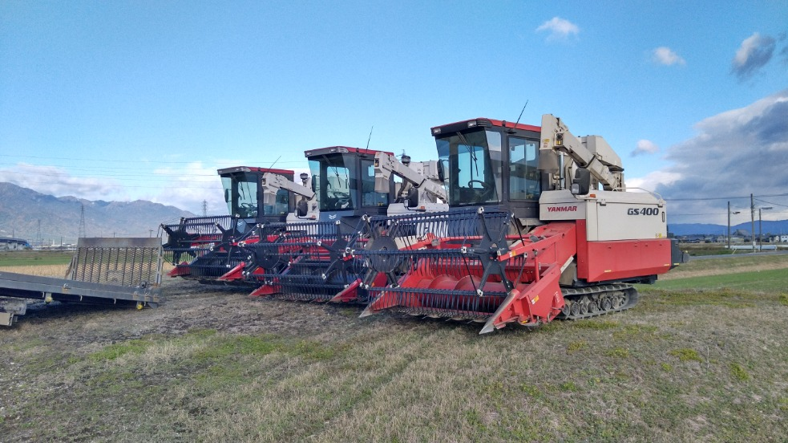
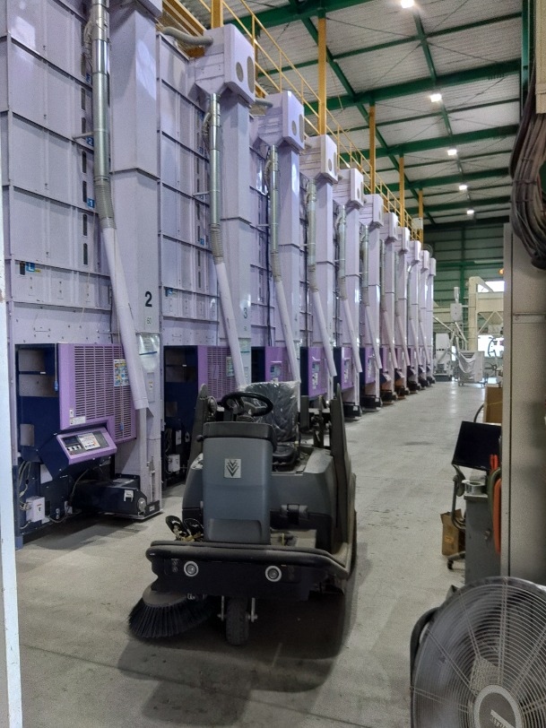
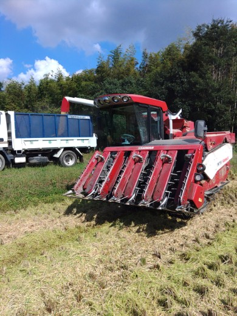
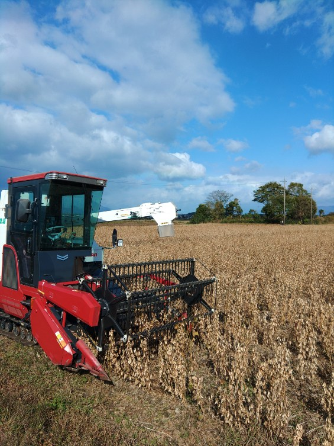

大切な農地を引き受けることで、耕作放棄地が出ないよう地域の農地保全に取り組んでいます。
事業内容を見る私たちについて
地域に根ざし、丁寧な仕事を大切に。
私たち「加藤農場」は、三重県の四日市市で水稲・露地野菜の生産・販売、農地請負、農作業代行などの事業をおこなっています。四日市市は三重県北部に位置している県の産業中心地。私たちはここで145haほどの広大な農地で、業務用のお米、種子用の小麦、豆腐用の大豆「フクユタカ」、それら穀物以外に露地野菜も生産しています。販売先としては農作業の請負先、個人の消費者さん、大手卸売店、外食店などで幅広いお付き合いがある私たち。農地の請負もおこなっており、作業のしにくい土地や農業ができなくなった農家の方の大切な土地を預かり、地域の農地保全に取り組んでいます。農作業代行業務では丁寧で早い作業を心がけており、地域の農地を荒らさずに、次の世代へ渡したいという考えのもと事業を営んでいます。
事業内容
現場に合わせた仕事を丁寧に行います。
農業
米・麦・大豆などの生産を通じ、地域の農地を活用し、農業を支えます。

作業委託
農地での作業委託に対応します。作業内容はご相談ください。

仕事の風景
日々の仕事や現場の様子をご紹介します。


会社概要
会社名：株式会社加藤農場
2011年 農林水産大臣賞受賞(個人経営部門)
2007年 ライスセンター竣工
2024年 会社設立
2026年 ビーンセンター竣工
代表者：代表取締役 加藤剛
従業員数：9名
事業内容：農地請負、農業代行、水稲の栽培管理、露地野菜の生産販売
所在地：(株)加藤農場ライスセンター(三重県四日市市上海老町2145)
採用情報
私たちの仕事に興味を持ち、熱意のある正社員を募集しています。
仕事内容
【農業機械オペレーター】
・水稲、小麦、大豆の生産・販売
・大型農業機械による作業やあぜ草刈りなどの管理作業
※体力を使う仕事が多いです。
勤務地
(株)加藤農場ライスセンター
三重県四日市市上海老町2145
雇用形態
正社員
雇用期間
雇用期間の定め: なし
試用期間: あり
2ヶ月
※期間中は日給:8,800円(時給1,100円×8時間労働)
勤務時間
8:00 〜 17:00(休憩60分)
実働時間: 8時間00分
※時期によって休憩時間変動あり
※時間外勤務あり(月平均5時間程度)
休日
年間休日80日程度
※日曜日・他(1月～3月は週2日休み)
※他、天候により休みになる日があります
社会保険
雇用保険・労災保険・健康保険・厚生年金
給与
月給: 220,000円 〜 300,000円
《給与モデル》
3年目:月給250,000円
6年目:月給310,000円
※能力・年齢・経験による
待遇
昇給あり(10,000円/月、過去実績による)
賞与あり(年2回、計4.5ヶ月程度(昨年度実績) ※業績により追加で特別賞与あり)
通勤手当あり(上限10,000/月)
住宅手当あり(上限10,000/月)
職務手当あり
資格手当あり(大特:5,000円/月 中型・大型:3,000円/月 けん引:2,000円/月)
夏季休暇あり(3日間)
年末年始休暇あり(5日間)
有給休暇あり(6ヶ月経過後10日付与)
連休取得相談可
資格取得費用の補助あり(全額補助 ※AT限定解除については要相談)
社員割引制度あり
作業着の支給あり(希望者に支給)
マイカー通勤可
退職金制度あり
寮・社宅
なし
応募条件
年齢：40歳以下＊長期勤続によるキャリア形成のため
学歴：不問
経験：不問
免許：普通自動車免許(AT限定相談可)
＊大型特殊、フォークリフト免許を入社後に取得していただきます(所持者優遇)
応募の流れ
あぐりナビにてお願いいたします。(メール：taiki.kato448121@gmail.com)
選考フロー：応募→書類選考→面接→採用
受動喫煙防止措置の状況
屋外喫煙可(屋外で就業)
＊作業中は禁煙
お問い合わせ
農業あるいは弊社について、お気軽にご相談ください。
Tel:090-4409-6693
Email:taiki.kato448121@gmail.com